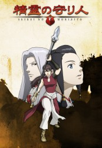

")
 
 IMDB-Wertung: 8.4 / 10
IMDB-Wertung: 8.4 / 10  Metascore:
Metascore: 
Balsa, die Speerkämpferin, ist eine wandernde Kriegerin, die sich ihr Geld als Leibwächterin verdient. Diese gefährliche Aufgabe übernimmt sie aber nicht nur des Geldes willen, sondern sühnt so auch dafür, dass sie einst das Leben von 8 Menschen nahm, die ihr nahe standen, indem sie zum Ausgleich 8 Leben rettet. Als sie den Prinzen Chagum von Yogo vor dem Ertrinken rettet und zum Dank in den Palast der zweiten Kaiserin eingeladen wird, offenbart diese Balsa, als Leibwächterin mit dem Prinzen zu fliehen, da dieser - von etwas Mysteriösem besessen - einen vom Kaiser befohlenen Mordanschlag fürchten muss.
Jahr: 2007
Dauer: 24 Minuten
FSK: 12
Land: Japan Studio: Cartoon NetworkTonspuren: DTS - ,
Untertitel: Deutsch,
Auflösung: 1080p (1920x1080) Größe: 991 MB
Genre: Abenteuer, Fantasy, Animation/Trick, TV-Serie
Regisseur: Kôdai Kakimoto, Kenji Kamiyama, Tomoki Kyôda, Toshiyuki Kôno, Toshiya Niidome, Kiyoko Sayama, Kôichi Hatsumi, Masaki Tachibana, Shigeru Ueda, Norio Kashima, Sôichi Masui, Norihiko Nagahama, Yukio Takahashi, Hiroshi Yamazaki, Masayuki Yoshihara
Drehbuch: Production I.G.
Soundtrack:
Darsteller:
 Christopher Corey Smith als Yun
Christopher Corey Smith als Yun John Snyder als Soya
John Snyder als Soya Cindy Robinson als Balsa
Cindy Robinson als Balsa Barbara Goodson als Torogai
Barbara Goodson als Torogai Jamieson Price als Mon
Jamieson Price als Mon Beau Billingslea als Karbo
Beau Billingslea als Karbo Grant George als Yarsam
Grant George als Yarsam Darrel Guilbeau als Tandor
Darrel Guilbeau als Tandor Jason Miller als Jin
Jason Miller als Jin Kyle Hebert als Jiguro
Kyle Hebert als Jiguro Doug Stone als Gakai
Doug Stone als Gakai Fumihiko Tachiki als King's Lance
Fumihiko Tachiki als King's LanceDatei: X:\HD-Anime-Serien\Guardian of the Sacred Spirit\Guardian of the Spirit E01 Balsa die Leibwächterin.mkv seit 28.07.2017
Festplatte: Gemischt-01+Anime
 Es gibt insgesamt 67 Filme in der Gruppe 'HD-Anime-Serien'
Es gibt insgesamt 67 Filme in der Gruppe 'HD-Anime-Serien'